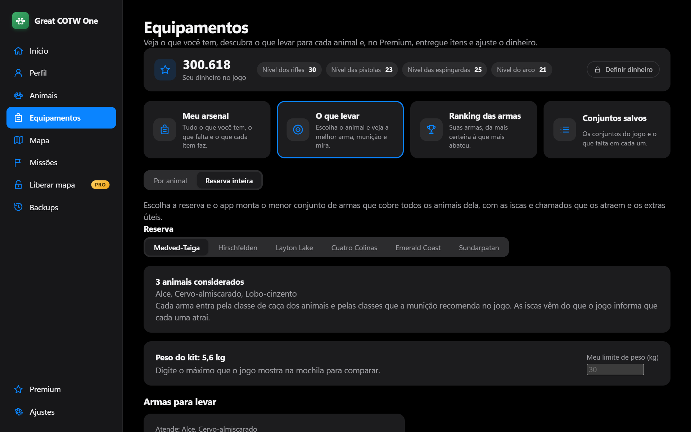

Mapa de zonas e rastreador de grupos
Veja onde os animais comem, bebem e descansam, no mapa do próprio jogo. Escolha um grupo e o app desenha a rota do dia, com o horário de cada parada e onde ele deve estar agora.

Projeto de fã · Windows 10 e 11 · 100% single-player
O Great COTW One lê o seu save do theHunter: Call of the Wild e mostra onde cada grupo de animais passa, a que horas, qual arma e munição servem para cada bicho e tudo o que você já conquistou. Sem planilha, sem código, em português.
O app lê o seu save e a sua instalação do jogo e transforma tudo em telas simples.
Veja onde os animais comem, bebem e descansam, no mapa do próprio jogo. Escolha um grupo e o app desenha a rota do dia, com o horário de cada parada e onde ele deve estar agora.
Todas as reservas e espécies, com onde cada animal vive, quantos você tem no save (machos, fêmeas, Great Ones, maior peso e pontuação) e os seus melhores abates.

Nível, abates, precisão de tiro, tiro mais longe, troféus e as conquistas da Steam, com filtro e busca.

Quanto falta em cada reserva, o que está em andamento e a lista de missões com o texto do próprio jogo.

A página de Equipamentos mostra tudo o que o seu perfil guarda e responde a pergunta de todo caçador: o que eu levo para esse animal?
Armas, munição, miras, iscas e equipamentos de campo com ícone do seu jogo, o que você tem, o que falta e o nível que libera cada item.
Tiros, acertos, precisão, abates, abates de um tiro, recorde e tiro mais longe de cada arma. Ordene por abates, precisão ou recorde.
Escolha a reserva e o animal. O app usa a classe de caça do animal e as classes que cada munição recomenda no próprio jogo e sugere o melhor do seu arsenal, mais o que vale comprar.
Veja os seus loadouts, qual está ativo e quais itens faltam em cada um.


As telas usam dados de exemplo. No app você vê o seu arsenal e os ícones do seu jogo.
Mexer em save dá medo. Por isso cada regra abaixo é testada e vale para tudo o que o app grava.
Uma cópia completa antes de qualquer gravação. Os backups nunca são apagados e você volta ao momento anterior com um clique.
O app confere se o jogo está aberto e se recusa a gravar enquanto estiver.
Toda mudança é exibida para você confirmar e relida em seguida para verificar byte a byte.
Nada de multiplayer e nada de automação do jogo.
Nenhum arquivo, imagem ou dado do jogo vai no instalador: o app lê a sua instalação na hora.
Sim. O app guarda uma cópia completa antes de qualquer gravação, nunca grava com o jogo aberto, mostra o que vai mudar antes de aplicar e relê o arquivo depois para conferir. Você pode voltar ao momento anterior com um clique.
O app é só para single-player e não automatiza o jogo. Não use as edições em saves ligados a modos online.
Não. O app lê o seu save e o jogo instalado direto do computador. A licença Premium também é conferida sem internet.
Com o theHunter: Call of the Wild instalado pela Steam, no Windows 10 ou 11, e pelo menos uma partida salva. Os mapas de Askiy Ridge e Intisuyu ainda estão por confirmar.
O instalador ainda não tem assinatura digital paga, então o SmartScreen desconfia de qualquer programa novo. Clique em Mais informações e depois em Executar assim mesmo.
Português, English e Español, escolhidos em Ajustes. Nomes de animais, missões e conquistas acompanham o idioma.
Tudo o que lê o seu jogo é grátis: mapa, animais, perfil, missões, equipamentos e backups. O Premium é o que grava: liberar zonas, editar animais e entregar itens.
Baixe, abra e deixe o app achar o seu save sozinho. A instalação é só para o seu usuário e não pede senha de administrador.
Baixar para Windows